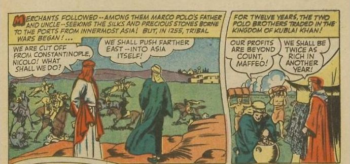

How it works: read the comic pages → answer the question about today's big idea → see what the comic got right and wrong → write 1–2 sentences. Done = all parts green, then turn in at the bottom.
Word help (tap to open)
- Middlemen = traders who buy goods and resell them for more
- Pilot = a sailor who guides ships through waters he knows
- Armada = a fleet of ships
- Calicut (KAL-ih-kut) = a rich pepper port in southwest India
- Mohammedan = an old, outdated word the comic uses for Muslims
- 1940s comic = made for American kids in the 1940s. It uses some old words and shows one point of view.

Click the page to make it bigger.
Turn in your work
Your work saves on this device, so you can come back later. Your teacher sees it after you turn it in.
Comics: Real Life Comics no. 16 (1944, Marco Polo) and no. 10 (1943, Vasco da Gama), Nedor Publishing, true-history comics of the 1940s. Public domain. Page images from Comic Book Plus (comicbookplus.com). Cropped to today's reading.